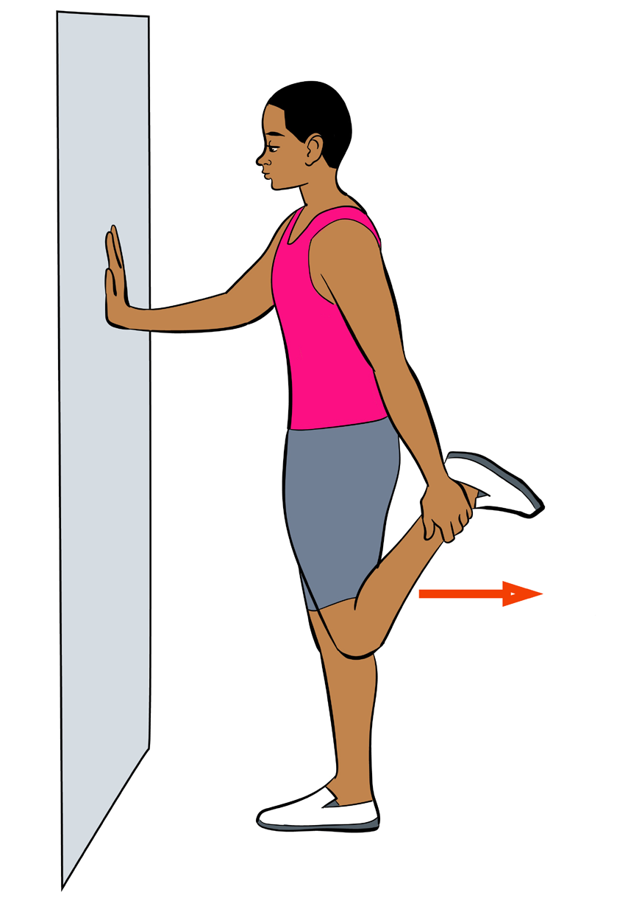

Perform forward lunges by following proper procedures.
Question:
Why it is important to hold on same pause for at least five seconds after lunging forward?
Standing quad stretch
Standing quad stretch can be performed by doing the following:
(i) Stand supported by touching a wall or a chair;
(ii) Pull the foot behind to the buttocks;
(iii) Keep knees close together;
(iv) Hold on the same pause for at least five seconds;
(v) Do the same procedures on the other leg; and
(vi) Repeat for at least three to six times.

Figure 3.6: Standing quad stretch exercise